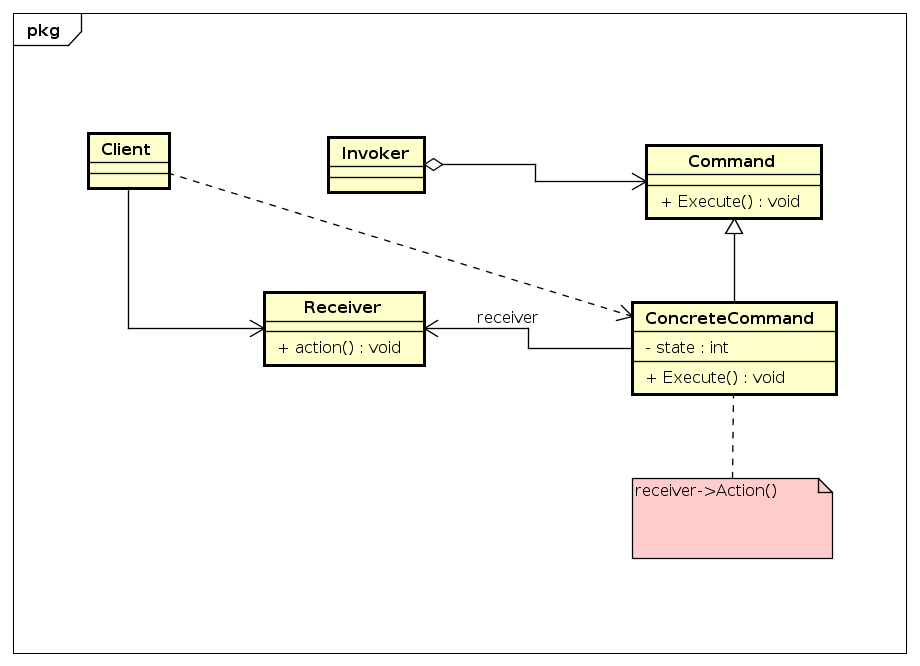

Command
Descrição:
A intenção deste padrão é encapsular uma solicitação como um objeto, desta forma permitindo parametrizar clientes com diferentes solicitações, enfileirar ou fazer o registro de solicitações e suportar operações que podem ser desfeitas.
Descrição da UML:
- - declara uma interface para a execução de uma operação.
- - define uma vinculação entre um objeto Receiver e uma ação.
- - implementa Execute através da invocação da(s) correspondente(s) operação(ões) no Receiver.
- - cria um objeto ConcreteCommand e estabelece o seu receptor.
- - solicita ao Command a execução da solicitação.
- - sabe como executar as operações associadas a uma solicitação. Qualquer classe pode funcionar como um Receiver.
Diagrama de Classes genérico do padrão:
Exemplo:
O exemplo exposto no livro, que contém a interface de programação de aplicativo para o Controle Remoto para Automção Doméstica. O objetivo central no projeto foi manter o código o mais simples possível para que não fosse necessário introduzir alterações quando novas classes fossem produzidas pelos fornecedores. Para essa finalidade, foi empregado o Padrão Command para desconcectar logicamente a classe RemoteControl das classes de vendedor. Acredita-se que isto irá reduzir o custo da produção do controle remoto, além de diminuir drasticamente seus custos permanentes de manutenção.